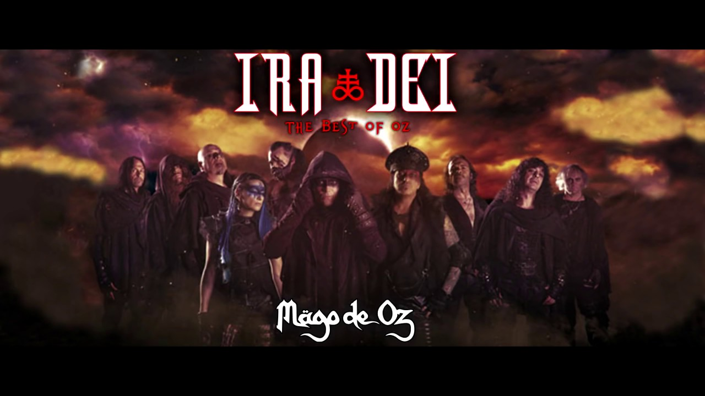

Banda española de folk metal fundada el 7 de mayo de 1988.
| AÑO | DISCO | |
|---|---|---|
| 1994 | MAGO DE OZ | |
| 1996 | JESÚS DE CHAMBERÍ | |
| 1998 | LA LEYENDA DE LA MANCHA | |
| 2000 | FINISTERRA | |
| 2003 | GAIA | |
| 2004 | BELFAST | |
| 2005 | GAIA II: LA VOZ DORMIDA | |
| 2007 | LA CIUDAD DE LOS ÁRBOLES | |
| 2010 | GAIA III: ATLANTIA | |
| 2010 | GAIA: EPÍLOGO | |
| 2012 | HECHIZOS, PÓCIMAS Y BRUJERÍA | |
| 2014 | ILUSSIA | |
| 2015 | FINISTERRA OPERA ROCK | |
| 2019 | IRA DEI | |
| Pie de tabla. | ||